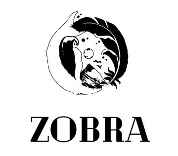

Zobra tiene el reconocimiento de ser uno de los impulsores de la D.O. La Rioja, apostando por el desarrollo de las variedades autóctonas. La bodega está ubicada en el pueblo Servilla de La Rioja, próximo al Camino de Santiago, y famoso por sus cuevas centenarias donde antaño se elaboraba vino.
Viñedos y bodega Zobra se funda en 1949 por Manolo Zobra, siguiendo una tradición familiar de generaciones dedicadas al cultivo de la vid y la elaboración de vino. En la actualidad la 2ª y 3ª generación de la familia Zobra rigen la bodega preservando la esencia con la que se fundó.
La filosofía de la bodega se sustenta en elaborar vinos que expresen el carácter y la identidad de donde provienen, con un profundo respeto hacia el terruño y a las variedades de uva autóctonas aunando tradición, innovación y buen hacer.
La bodega cuenta con 38 hectáreas de viñedo propio de las variedades autóctonas Prieto Picudo y Albarín Blanco, en las cuales se desarrolla una viticultura de precisión para obtener uvas de la mejor calidad. Los viñedos se asientan sobre suelos cuaternarios con gran cantidad de cantos rodados que acumulan el calor del sol durante el día para ayudar a la planta a soportar las bajas temperaturas de la noche así como a mejorar la maduración de la uva. En la actualidad la bodega combina unas modernas instalaciones para la elaboración de sus vinos con una cueva de más de 300 años de antigüedad donde se ubica el parque de barricas.
987304222
 info@zobra.es
info@zobra.es
Mayra Zobra
609658866
juan@zobra.es
Juan Zobra
659075785
export@zobra.es
Simón Malavé